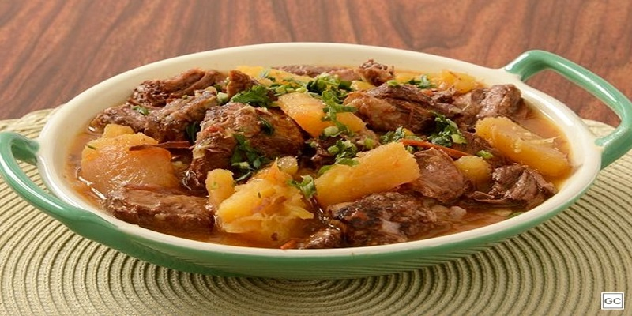

Página C

INGREDIENTES
- 2 cebolas picadas
- 5 tomates descascados, picados sem sementes
- 4 dentes de alho amassados
- 1 colher (chá) de salsinha picada
- 1 colher (sopa) de vinagre
- 3 cebolinhas verdes picadas
- 1 cubinho de caldo de carne
- 1 kg de costela de vaca
- 1 kg de mandioca descascada e cortada em pedaços
- 2 colheres (sopa) de óleo
PORÇÕES
Serve 8 pessoas
TEMPO DE PREPARO
60 minutos
PASSO A PASSO
- Em uma panela, coloque as costelas, a cebola, o alho e o oléo.
- Leve ao fogo e refogue até que dourem.
- Acrescente os tomates, o vinagre, a salsinha, a cebolinha, o cubinho de caldo de carne e água suficiente para cobrir o conteúdo da panela.
- Deixe cozinhar, até que a carne fique macia.
- Então, junte a mandioca e água suficiente para cozinhá-la.
- Servir quente.